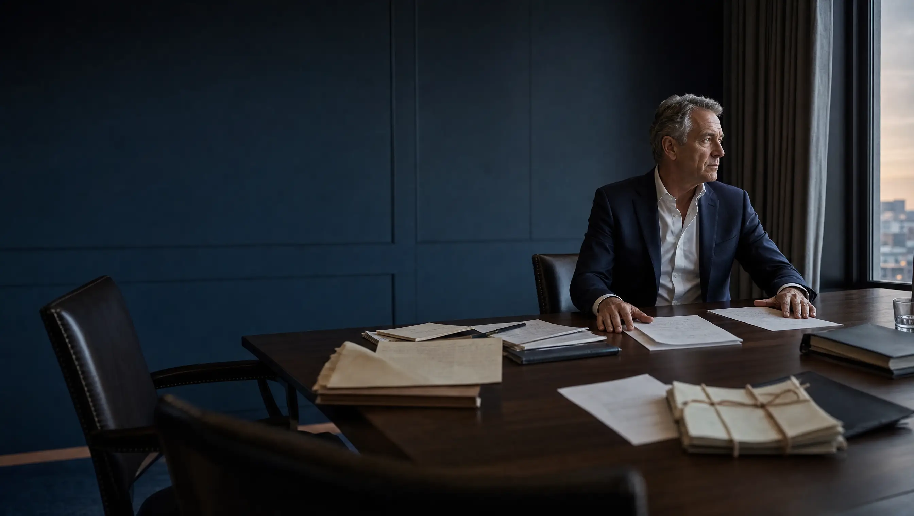
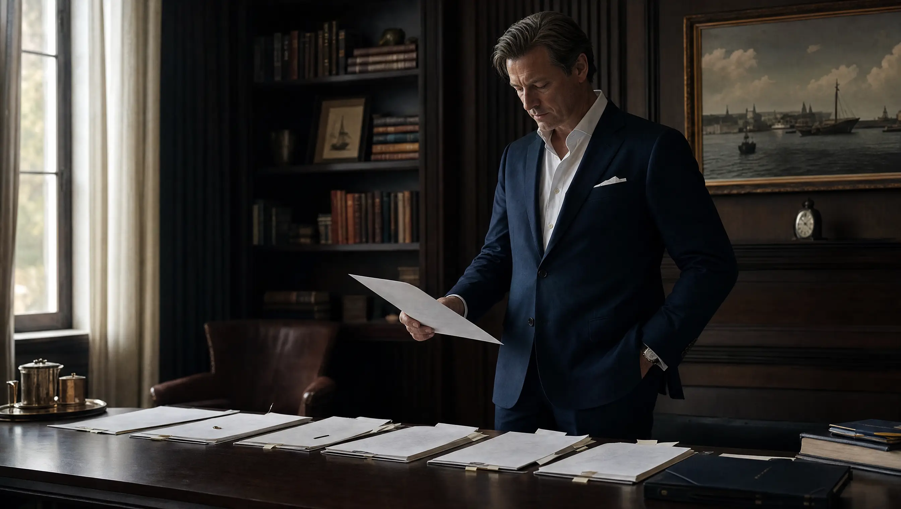
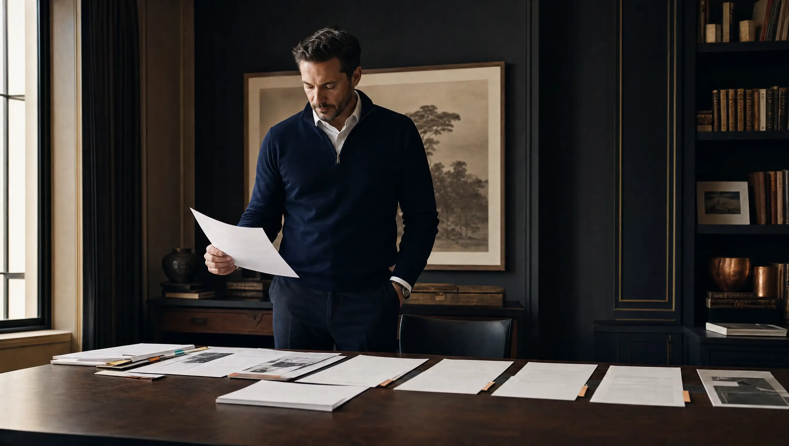
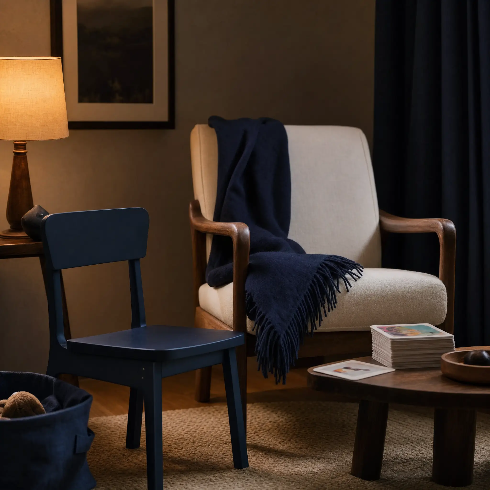
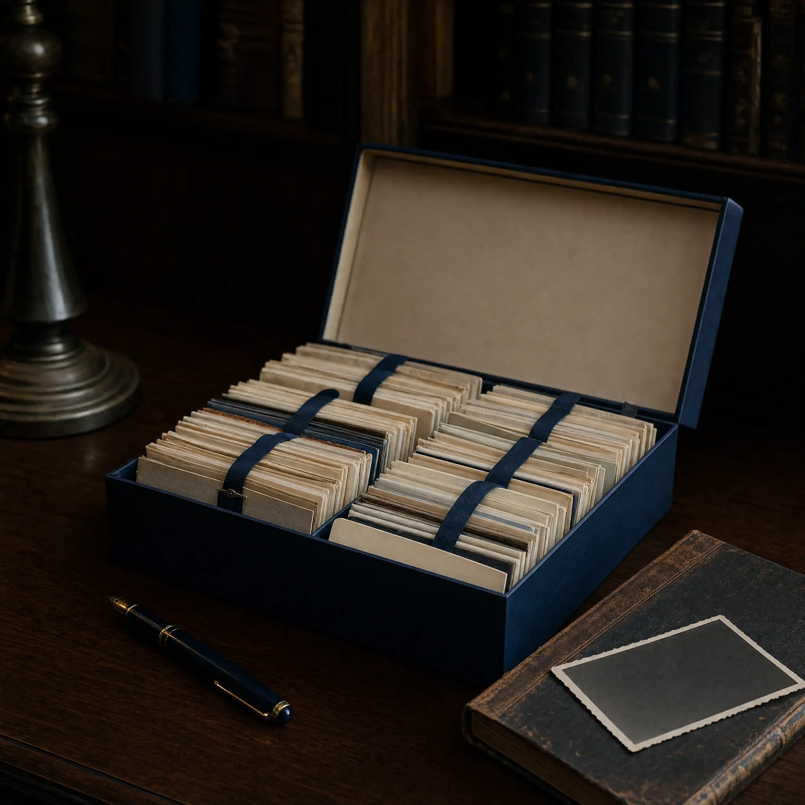
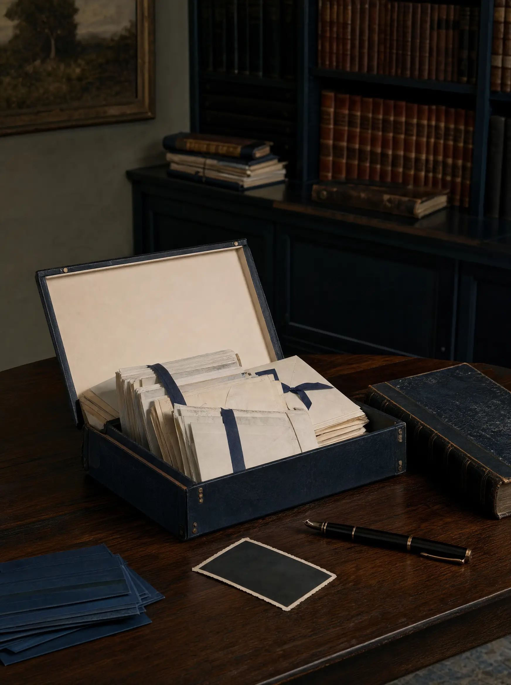
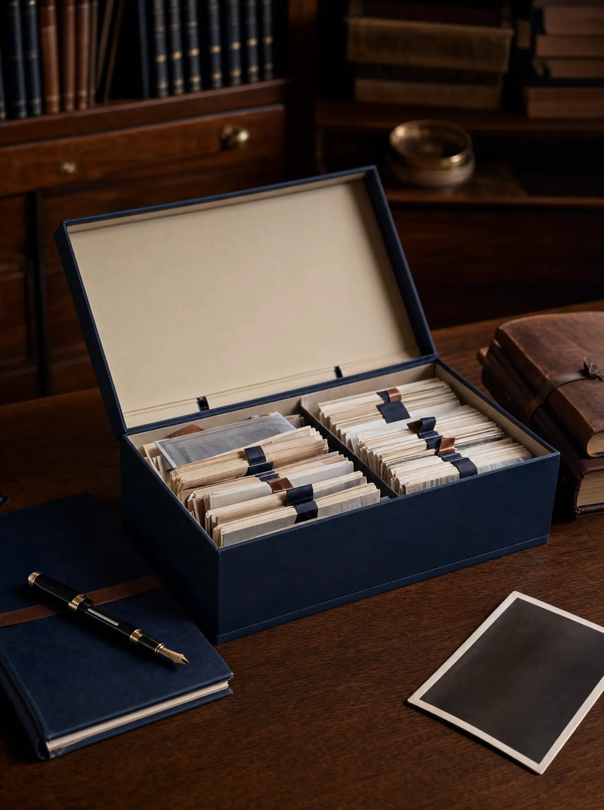
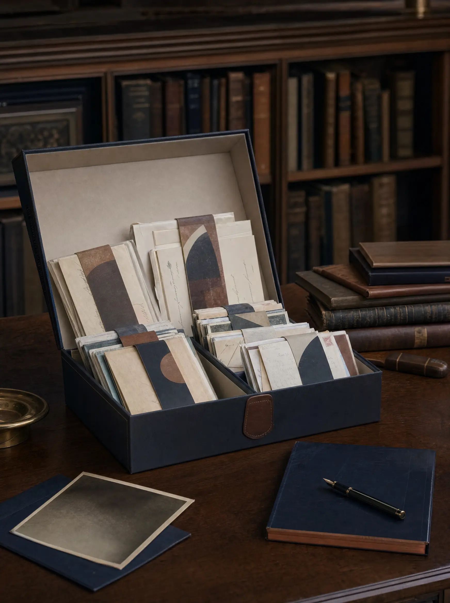
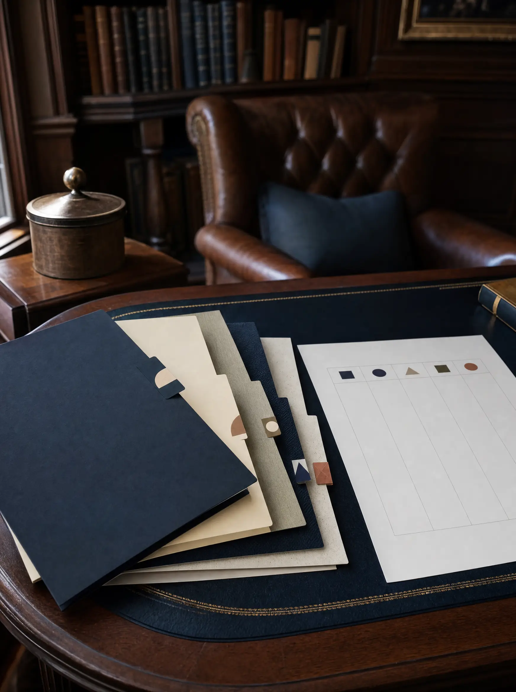

Approval surface · not integrated
Launch Candidate v2 · Higgsfield contact sheet
GPT Image 2 · 2K · high quality · three variants per required asset
Review for emotional target, palette continuity, anatomy, paper physics, phantom text, privacy, and crop potential.
Asset A The Final Call
Emotion: weight held with composure. Desktop hero, 16:9.

Asset C Continuity, After
Emotion: the exhale; calm command. Section transition, 16:9.


Asset D1 The Founder's Own Call
Emotion: prepared, not afraid. Objects only, 1:1.
Asset D2 The Daily Brief
Emotion: the morning already carried. Objects only, 1:1.
Asset D3 A Father Supporting His Son
Emotion: care, readiness, tenderness without exposure. No people or children, 1:1.

Asset D4 The Philanthropist
Emotion: why, preserved. Objects only, 1:1.

Asset E1 Operating Continuity
Emotion: a prepared operating picture. 3:4 source, 4:5 final target.
Asset E2 Research and Preparation
Emotion: disagreement prepared for review. 3:4 source, 4:5 final target.
Asset E3 Authorship
Emotion: lived memory protected from the surrounding project load. 3:4 source, 4:5 final target.
Asset E4 Legacy
Emotion: several generations of responsibility held with care. 3:4 source, 4:5 final target.



Asset E5 Expert Advice
Emotion: disagreements preserved, questions prepared. 3:4 source, 4:5 final target.
